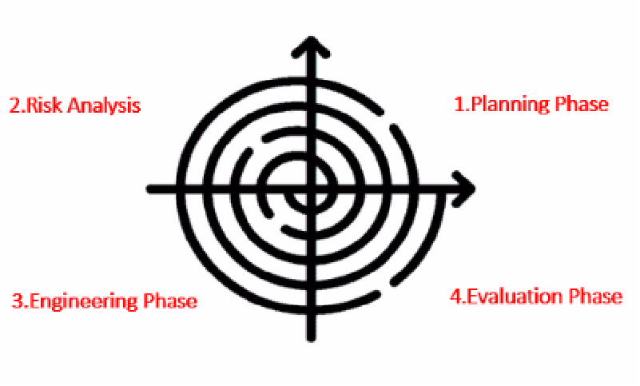

Spiraalmudel on riskipõhine arendusmudel. Ta on kosemudeli ja iteratiivse mudeli kombinatsioon. See on loodud selleks, et hallata keerulisi projekte, kus on olulised riskide hindamine ja juhtimine terve projekti ajal
Spiraalmudel on riskipõhine arendusmudel, selle tegi Barry Boehm.
Iga ring spiraalmudelis on üks arendustsükkel, mis koosneb neljast peamisest
tegevusest: planeerimine, riskianalüüs, arendus ja testimine.
Ta on kosemudeli ja iteratiivse mudeli kombinatsioon. See on loodud selleks, et
hallata keerulisi projekte, kus on oluline riskide hindamine ja juhtimine terve projekti ajal.
| 1. Eesmärkide määramine | 2. Riskianalüüs | 3. Arendus ja testimine | 4. Hindamine ja planeerimine |
|---|---|---|---|
| Määratakse, mida selles tsüklis tehakse ja kirjutatakse nõuded ja piirangud | Analüüsitakse võimalikke riske, vajadusel tehakse prototüüp riskide vähendamiseks. | Arendatakse tarvara osa ja tehakse testimine | Klient annab tagasisidet, planeeritakse järgmiseks tsükliks |
| Head küljed | Halvad küljed |
|---|---|
| Projektide riskide hindamine ja juhtimine on parem | Projektide arendus on keerulisem ja kallim kui muud mudelid |
| Sobib suuretele projektidele | vajab meeskonda kellel on kogemus riskide hindamise ja juhtimise osas |
| Klient saab tagasisidet anda | Ei sobi väikeste projektide jaoks |
